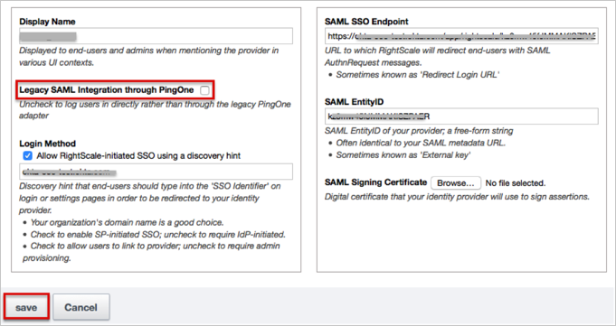
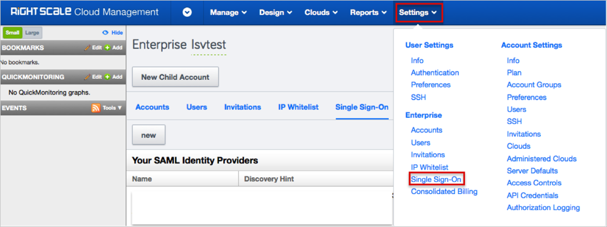
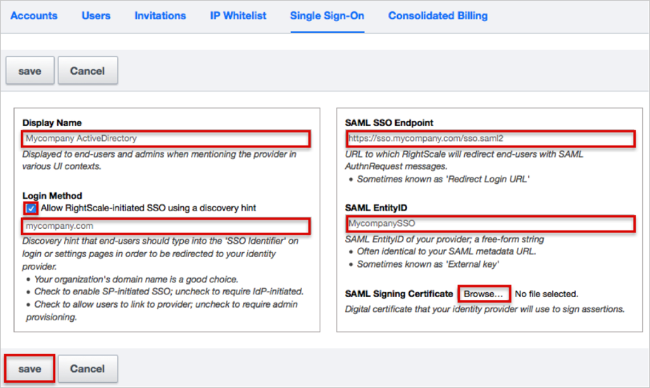
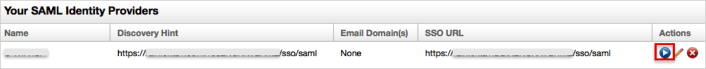
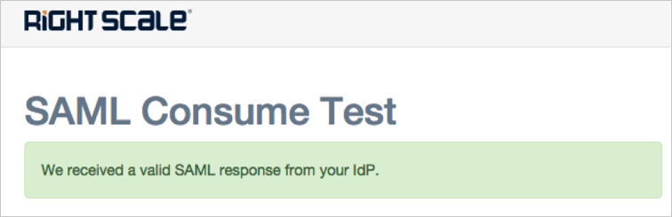
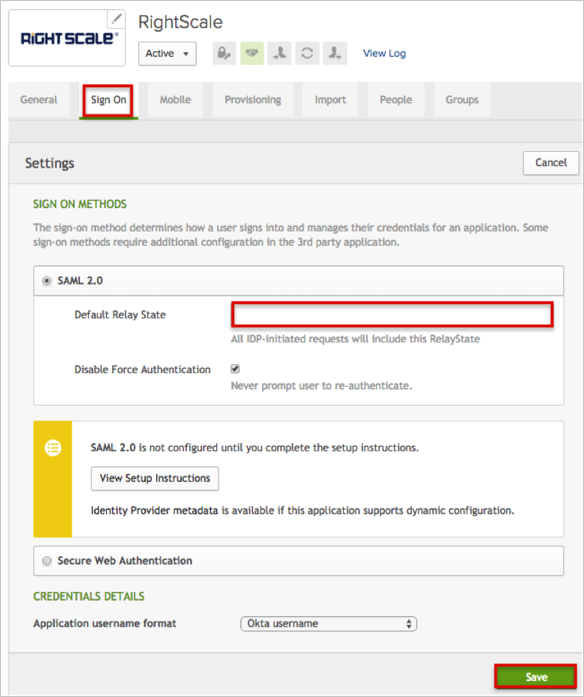
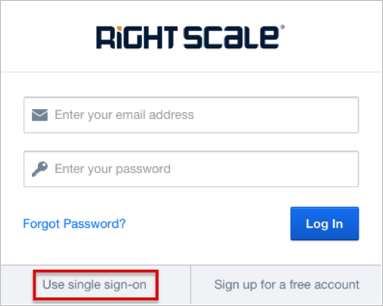
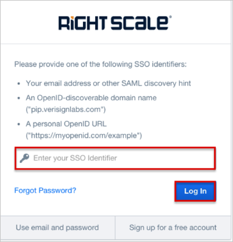

The Ping-based integration is outdated and replaced by the new integration. Please disable (uncheck) the Legacy SAML Integration through PingOne checkbox in order to ensure that SP-initiated login continues to work:

Sign in to your RightScale account as an administrator.
Navigate to Settings > Single Sign-On.

Click the New button.

Enter the following information (see screen shot at end of step for reference):
Enter a Display Name.
If you need to enable SP-initiated SSO, under Login Method, check the Allow RightScale-initiated SSO using a discovery hint box. Then enter [YourSubDomain].okta.com as the discovery hint.
SAML SSO Endpoint: Copy and paste the following:
Sign into the Okta Admin Dashboard to generate this variable.
SAML IdentityID: Copy and paste the following:
Sign into the Okta Admin Dashboard to generate this variable.
SAML Signing Certificate: Save the following, click Browse to locate, then upload it to RightScale.
Sign into the Okta Admin Dashboard to generate this variable.
Click Save and you will be returned to the Identity Provider list page.

Click the arrow icon under the Actions label to test your IdP configuration:

The SAML Consume Test page will appear:

Just In Time (JIT) Provisioning: If you need to have users provisioned via SSO then you will need to Enable authority for your new IdP over the SAML-asserted email domains (see http://docs.rightscale.com/platform/saml/registering_idp_authority.html
RightScale SAML RelayStates: The value of the RelayState tells the Service Provider (RightScale) what application within the SP the user should be redirected to.
Below is a table of the RelayState values supported by RightScale:
| RelayState | Meaning | Action |
|---|---|---|
| Blank or absent | IdP did not specify a destination | Redirect to CM |
| urn:rightscale:product:cm | User wants to interact with Cloud Management (CM) | Redirect to CM |
| urn:rightscale:product:ss | User wants to interact with Self-Service (SS) | Redirect to SS |
| urn:rightscale:product:ca | User wants to interact with Cloud Analytics (CA) | Redirect to CA |
| https://*.rightscale.com/* | User wants to reach a specific page in some product | Redirect to requested page |
To specify the RightScale RelayState, in Okta, select the Sign On tab for the RightScale app:

Done!
Notes:
IdP-initiated flows, SP-initiated flows, and Just In Time (JIT) provisioning are all supported.
For SP-initiated flows (if enabled, see step 4, above):
Click the Use single sign-on button.

Enter your Discovery hint (see step 4, above) into the Enter your SSO Identifier field, then click the Log In button.
